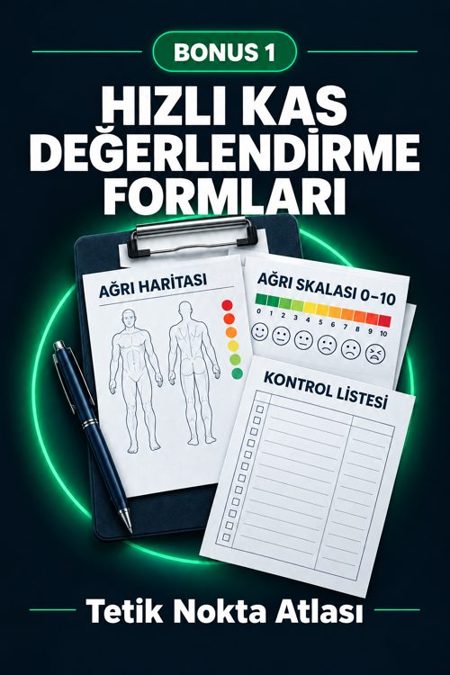
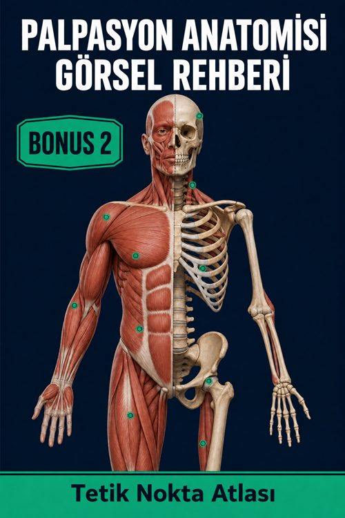

Atlasınız
3 ücretsiz bonusunuz

Bonus 1Hızlı Kas Değerlendirme Formları
Yazdırılabilir klinik formlar: ağrı haritası, VAS skalası, tetik nokta muayene bulgusu, tedavi günlüğü.
Aç · 8 sayfa →
Bonus 2Palpasyon Anatomisi Görsel Rehberi
Kemik referans noktaları, tutuşlar ve palpasyonda sık yapılan hatalar.
Aç · 12 sayfa → Bonus 3
Bonus 3Klinik İçin Yüksek Çözünürlüklü Eğitim Posterleri
En sık görülen 6 yansıyan ağrı paternini içeren A3 formatında 6 poster.
Aç · 6 sayfa →Nereden başlamalı
- Atlası açın ve «Atlas nasıl kullanılır» sayfasına göz atın.
- Belirti aramasını veya PDF yer imlerini kullanın: her kasa tek tıkla ulaşırsınız.
- İlk muayene için Hızlı Kas Değerlendirme Formlarını yazdırın (Bonus 1).
- Kliniğiniz için A3 formatındaki posterleri yazdırın (Bonus 3).
Yalnızca kişisel kullanım içindir. Dosyaların yeniden satışı ve dağıtımı yasaktır.